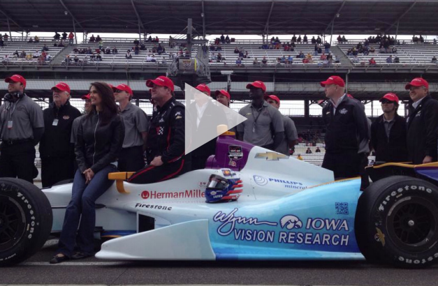

“We are a team that is going to take our experience racing for championships and apply that leadership to make great things happen for well-meaning organizations that support great causes. Our support for the University of Iowa’s Stephen A."‐ Joe Research UI Ophthalmology and Visual Sciences student Wynn Institute Research Assistant
The University of Iowa Stephen A. Wynn Institute for Vision Research—so named in recognition Stephen A. Wynn’s extraordinary gift commitment in 2013—was created to accelerate the eradication of heritable human blindness through interdisciplinary research, education, and clinical care. Scientists such as Jo Research, under the direction of first-rate faculty, have made tremendous strides in their efforts to speed progress toward a cure—and the institute’s many supporters have partnered on various efforts to raise awareness for its mission
